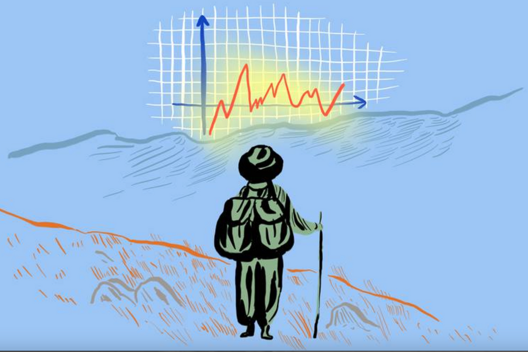

Free resources that follow Bjarne Berg Wig's book chapter by chapter: videos, articles, templates and downloads. Questions, ideas or resources to share: post@learnorg.global.
The VMCL framework: vision and mission, systems and learning
Introduction: Why Obeya and why now?
The purpose of this book is to help all types of leaders, managers, trade union representatives and operators, to be able to strengthen the ability to adapt to challenges through to a better learning together. Frederick Laloux writes in his epoch-making re-invention organisations.
There have been many organisational paradigms (ways of thinking) before, and there will be new in the future organisations". Organisations will change because they have to, such as Charles Darwin in his time formulated in relation to species. System thinkers with Obeya will help with the transition from traditional
management to the a dynamic development and learning systems. There are several important sources you can look up here. But I recommend you to start by reading Dr. Deming´s New Economics. If you haven't read it by now, order it!.
Central to Deming´s theori is that most of the results we don't want are "built into" the systems. By understanding the systems better, we will be able to improve them. People are more than good enough, but they have to change the way they lead. Then we must have knowledge. This is the central point. We have to stop "believing" and get our bearings by observing and thinking better. Part 1 in the book The book deals with the theoretical basis for this shift.
Am C. Edmonson from Harvard Business School lecture
Chapter 1
What is a learning organisation?
A learning organisation is a complex system that is able to adapt through joint learning.
Here we use a framework called VCML. This is essentially the framework for ALL organisations. But by being aware of this, we put the organisation in a very position to learn.
VMCL: learning improves capacity, capacity carries out the mission, the mission reaches the vision
The framework for every organisation is VMCL or fission mission - Capability Systems and Learning. Capacity and culture are our organisation with people, equipment, procedures, materials, knowledge, etc. It is what we are. Learning is how we optimise and improve our capacity to carry out our mission and achieve our vision.
Obeya is a virtual or traditional space for solving complex problems by practicing three simple rules:
see together, think (reflect) together and try together.
We will go more throughly into the See-Think-Test, but here are some videos and links that can give you a deeper understanding of old and new scientific
discoveries.
The foundation of systems thinking is the dialectical approach and the "father" of dialectics Heraclitus´famous Panta Rei - everything flows.
Obeya is to SEE-THINK-TRY learnings "room" where we try to understand and solve complex problems.
Here we must also look at Daniel Kanheman and Amor Tverskys discover of the brains systems 1 and 2 and our innate capacity for bias and interpretations.
The three simple rules run like a common thread through the book.
Nobel price winner Daniel Kahnemann.
This is one of the important books for Systems Thinkers. Recommend to read it! Here is a summary from the website Psykologisk.no
Watch Dr. Derek Cabrera review recent research on DSRP
To draw an idea or think and put it together with others ideas or things make us better able to understand wholes, relationships, how things are connected an to see underlying, often hidden information.
By mapping and visualizing systems we understand them better.
Deming drew this diagram that illustrated the connections in a production system. This diagram "lighted up Japan" as Deming wrote in the New Economics. This is fundamental insystem thinking and Obeya.
Many have experience the importance of making visible by using value stream maps. The VSM map reveals many areas for improvement and is one of the basic tools in Lean development.See PPTX about VSM
Williams,C.G.(1998) Using Conceptual Maps to Assess Conceptual
Knowledge of Function. Journal of Research in Matematics Education,
Chapter 5
Think together
The four basic cognitive (thinking) functions that Dr.Derek Cabrera discover we are born with, known as DSRP: distinction, system, relationship and perspective.
Without these functions the brain simple wouldn't work.
Deming described the Theory of Knowledge as one of the four lenses "for deeper knowledge" See Deming´s own drawing of a learning cycle. See some notes and illustrations on the attached PDF.
Thinking maturity: most adults stay in the conventional range; training can move people towards systems thinking
Chapter 6
Without practice, no knowledge
Practice related to Obeya has three main forms
Observation, dialogue and PDSA learning loops in Obeya
Learning rounds – gemba rounds – LAMDA
Target practise trial/experiments according to the methodology in "Kata"
1. Learning loops
Practice is about doing something to learn. We have an idea, or a theory about a desire effect. And an idea of how we can make it happen. Then we have to try this idea, preferably as a small experiment. The PDSA cycle is a systematization of this dynamic process.
From daily board meetings at Fibo company in Lyngdal (Foto BBW)
2. LAMDA - learning rounds
3. "Kata" Try
Chapter 7
Strategy Obeya- Hoshin kanri
We have come to the most important chapter "Obeya". Specifically development of new knowledge. We need answers on how to improve and renew our capability systems to carry out missions and achieve our visions or goals

Chapter 8
Digital Obeya
Part II – Methods and practice
Chapter 9
Planning for Obeya
The relation between VMCL and the three “jigs” in Obeya
As we underlined in the Learning from Toyota chapter, we need a crystal clear order. What should be the deliverables from the Obeya?
Jig 1, line of sight: from today's situation to a clear picture of the future
Chapter 11
Understanding systems
A system map: the parts of the system and how they affect each other
The purpose of this wall is to understand the systemic challenges we have. As Cabrera states: "Stop solving problems before understanding the systems"
The key is to use the DSRP rules combined with systems mapping:
DSRP: the four simple rules of systems thinking (Dr. Derek Cabrera)
Chapter 12
Jig 3 Learning
The purpose of Obeya is new knowledge. Learning is connected to hor we think. Dr. Deming wrote the learning cycle as in picture to the right. Note that he wrote STUDY, not CHECK.
Jig 3, learning: break challenges into small trials and learn from each oneDeming's learning cycle: note that he wrote Study, not Check
Chapter 13
Learning Culture Mirror
The Learning Culture Mirror: six criteria for an adaptive learning culture
Do we have an adaptive learning culture? This assessment is based on a R&D program the institute did from 2018-2021. Resulting in six key criteria's to understand own learning culture strengths and weaknesses. The assessment tools will be presented here.